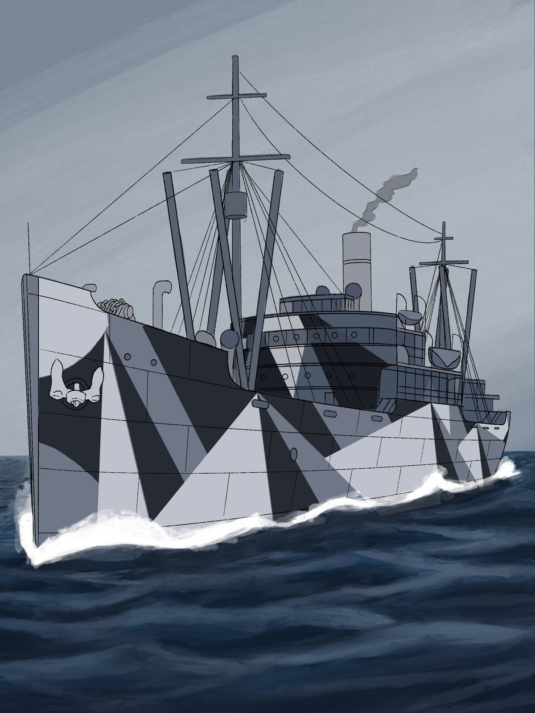
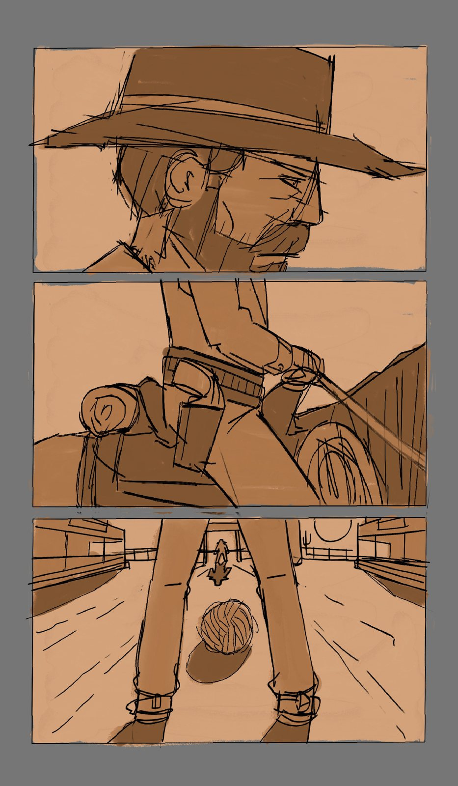
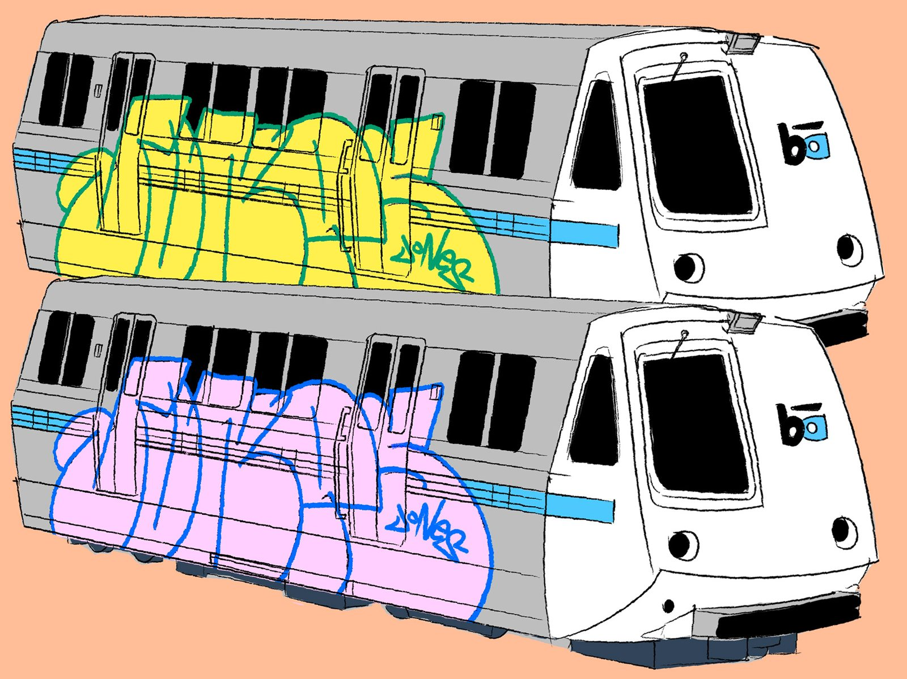
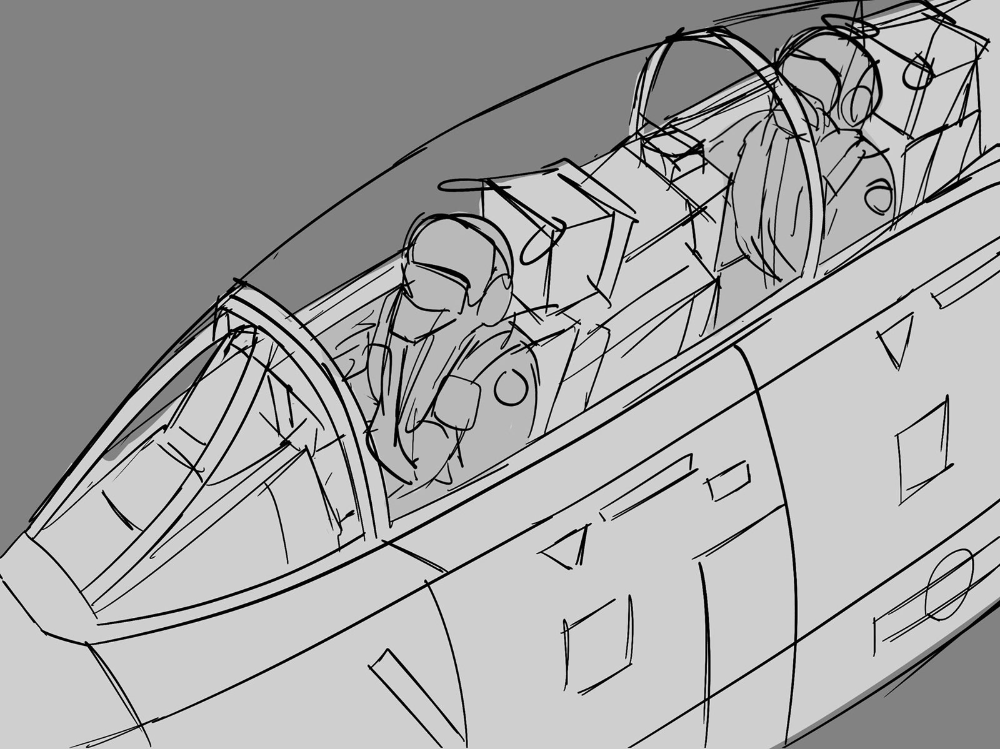

Concept Art & Storyboards
This is the pre-production side of my work: storyboards, vehicles, and props. It's the kind of design work I want to do in animation, and all of these are personal projects I made to build those skills.

Dazzle Ship
A cargo steamer painted in dazzle camouflage, the bold stripes navies used in World War I to confuse enemy submarines about a ship's speed and direction. It's one of my favorite strange details from history, and I painted it in cool grays on a rough sea.

Big Iron
A storyboard for a short animated western based on Marty Robbins' 1959 song “Big Iron,” about an Arizona ranger who rides into town to face a notorious outlaw.
It goes in the order I made it: hand-lettered title art first, then rough thumbnails planning out each shot, then cleaned-up color panels of the ranger riding in while the town waits. I made it to practice telling a story shot by shot, the way animation pre-production does.

Big Iron

Big Iron

Painted BART
Two BART trains carrying the same graffiti piece in two color schemes. BART and the graffiti on it are part of everyday life in the Bay Area where I live. Drawing the train clean and the letters loose let me test colors side by side.

Heavy Lift
A heavy-lift helicopter seen from straight below, with the rotor blades slicing across the page. The extreme angle was practice for drawing big machines in dramatic shots.

Engine Company
A fire engine in clean lines and gray tones. Vehicles like this show up constantly in background and prop design, so I wanted to get the proportions and details right.

Cockpit
A perspective sketch of a two-seat fighter jet cockpit with pilots inside. I used it to work out the canopy and panel lines before adding detail.